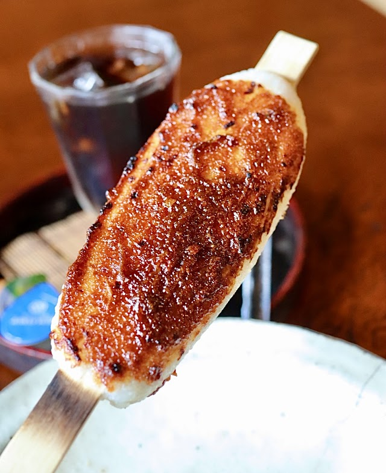
| 営業時間 | 月・火・木・金・土・日 9:00〜17:00 |
|---|---|
| 定休日 | 水曜 |
| 住所 | 愛知県豊田市足助町成瀬３１−１ |
| 予約 | 要確認 — ☎ 0565-62-1397 ／ 公式サイト |
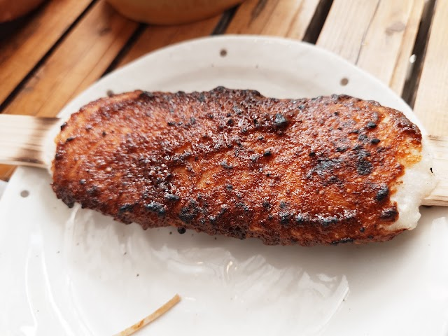
| 営業時間 | 月・火・水・金 10:00〜16:00 ／ 土・日 9:00〜16:30 |
|---|---|
| 定休日 | 木曜 |
| 住所 | 愛知県豊田市足助町飯盛３６番地 |
| 予約 | 要確認 — ☎ 0565-62-1188 ／ 公式サイト |
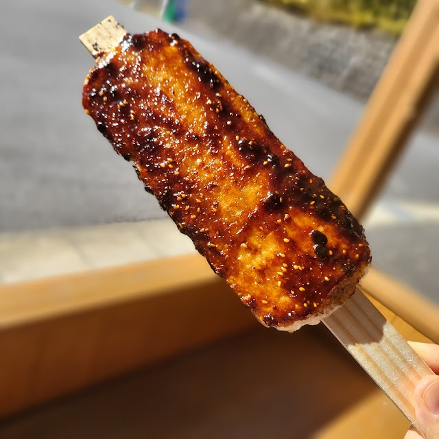
| 営業時間 | 月・火・水・金・土・日 9:00〜17:00 |
|---|---|
| 定休日 | 木曜 |
| 住所 | 愛知県豊田市大沼町根崎４７番地1 |
| 予約 | 要確認 — ☎ 0565-90-3003 ／ 公式サイト |
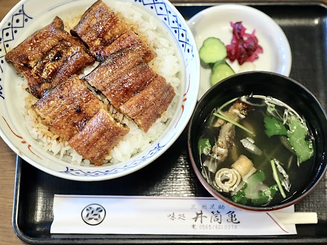
| 営業時間 | 月・火・水・金・土・日 11:00〜14:00, 16:00〜19:00 |
|---|---|
| 定休日 | 木曜 |
| 住所 | 愛知県豊田市足助町田町１７ |
| 予約 | 可 — ☎ 0565-62-0018 ／ 公式サイト |
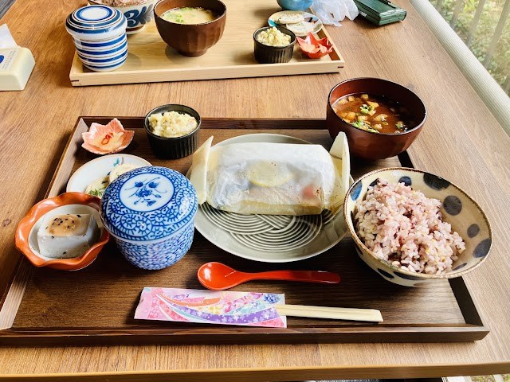
| 営業時間 | 月・火・水・金・土・日 10:30〜16:00 |
|---|---|
| 定休日 | 木曜 |
| 住所 | 愛知県豊田市足助町一ノ谷２２ |
| 予約 | 可 — ☎ 0565-62-0508 ／ 公式サイト |
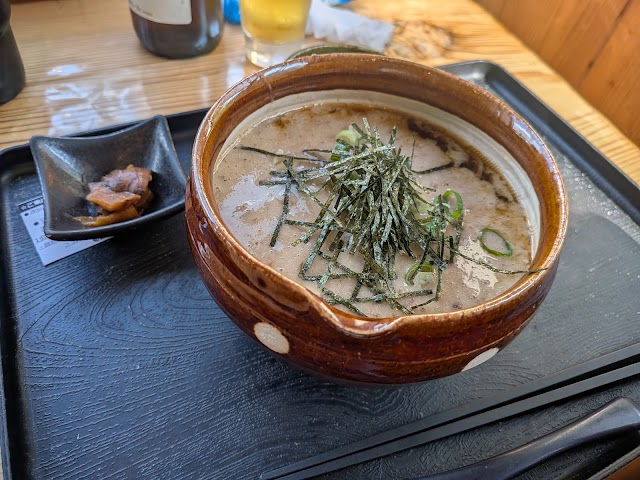
| 営業時間 | 月・火・水・木・金 11:00〜16:30 ／ 土・日 11:00〜17:00 |
|---|---|
| 定休日 | なし(要最終確認) |
| 住所 | 愛知県豊田市井ノ口町三斗蒔４−１ |
| 予約 | 要確認 — ☎ 0565-61-1860 ／ 公式サイト |
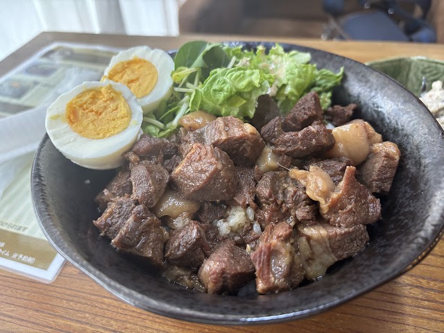
| 営業時間 | 月・火・水・木・金・土・日 11:00〜16:00 |
|---|---|
| 定休日 | なし(要最終確認) |
| 住所 | 愛知県豊田市北小田町伯母平２６ |
| 予約 | 可 — ☎ 090-5037-5199 ／ 公式サイト |
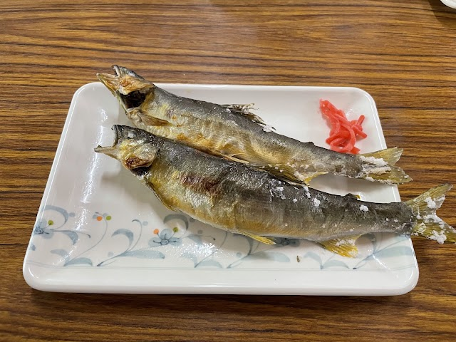
| 営業時間 | 月・火・水・木・金・土・日 10:00〜19:00 |
|---|---|
| 定休日 | なし(要最終確認) |
| 住所 | 愛知県豊田市西広瀬町市場２０３ |
| 予約 | 要確認 — ☎ 0565-41-2359 |
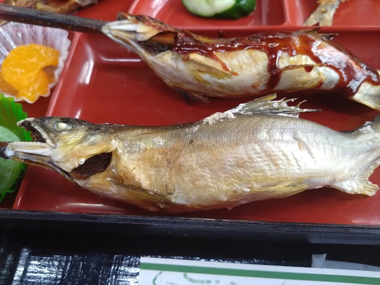
| 営業時間 | 月・火・水・木・金・土・日 10:00〜19:00 |
|---|---|
| 定休日 | なし(要最終確認) |
| 住所 | 愛知県豊田市小渡町間ケ島１２−１ |
| 予約 | 可 — ☎ 0565-68-2255 ／ 公式サイト |
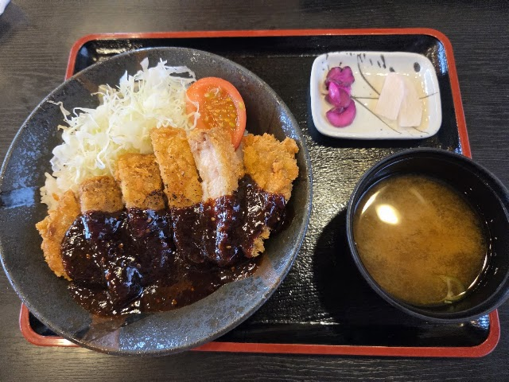
| 営業時間 | 月・火・金 11:00〜14:00 ／ 土・日 11:00〜14:00, 17:00〜20:00 |
|---|---|
| 定休日 | 水・木曜 |
| 住所 | 愛知県豊田市武節町針原２２−１ |
| 予約 | 要確認 — ☎ 0565-82-3135 |
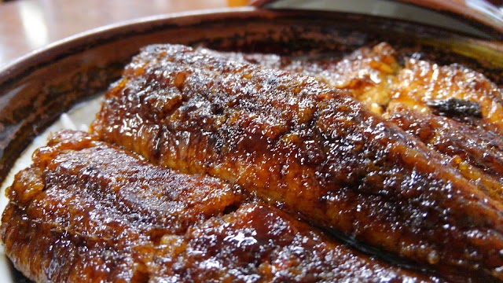
| 営業時間 | 火・水・木・金・土・日 11:00〜13:30 |
|---|---|
| 定休日 | 月曜 |
| 住所 | 愛知県豊田市足助町西町１４−３ |
| 予約 | 要確認 — ☎ 0565-62-0644 |
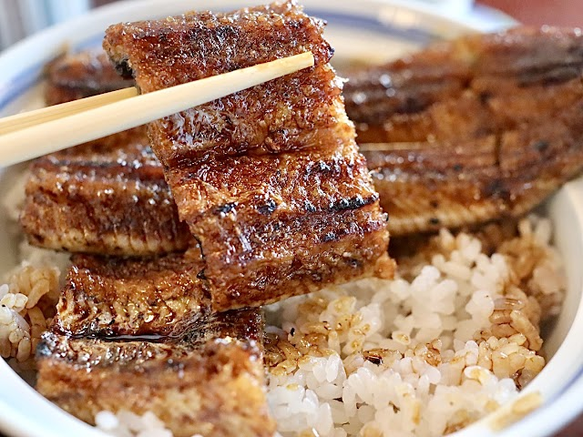
| 営業時間 | 月・水・木・金・土・日 11:30〜14:00, 16:30〜20:00 |
|---|---|
| 定休日 | 火曜 |
| 住所 | 愛知県豊田市高上１丁目７−１ |
| 予約 | 可 — ☎ 0565-88-2113 ／ 公式サイト |
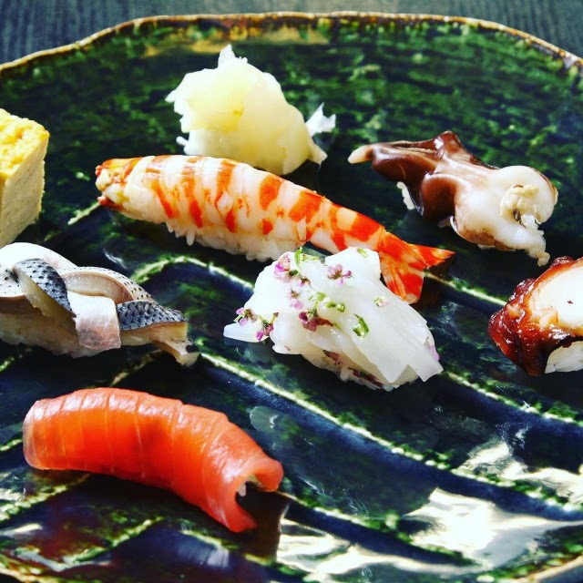
| 営業時間 | 月・火・水・金・土・日 11:30〜14:00, 17:00〜22:00 |
|---|---|
| 定休日 | 木曜 |
| 住所 | 愛知県豊田市本町高根２７−５ |
| 予約 | 可 — ☎ 0565-39-2901 ／ 公式サイト |
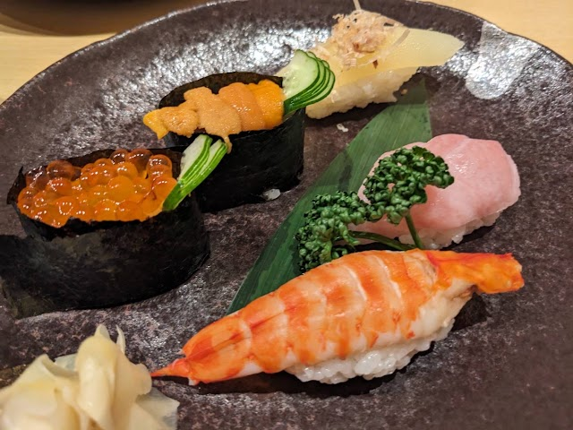
| 営業時間 | 11:30〜14:00、17:00〜22:00 |
|---|---|
| 定休日 | 水曜 |
| 住所 | 愛知県豊田市元宮町１丁目５−１ |
| 予約 | 可 — ☎ 0565-31-7861 ／ 公式サイト |
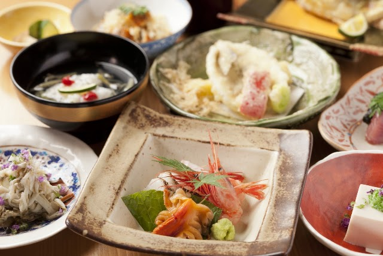
| 営業時間 | 火・水・木・金・土・日 11:30〜14:00, 17:30〜21:00 |
|---|---|
| 定休日 | 月曜 |
| 住所 | 愛知県豊田市浄水町３丁目 20番地 １ |
| 予約 | 可 — ☎ 0565-41-5284 ／ 公式サイト |
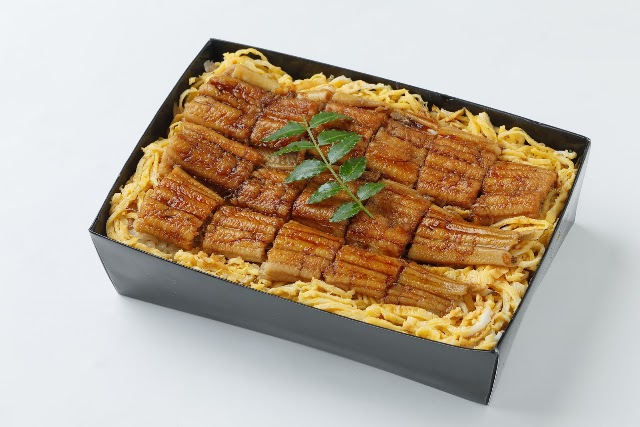
| 営業時間 | 火・水・木・金・土 11:00〜14:30, 17:00〜21:30 ／ 日 11:00〜14:30 |
|---|---|
| 定休日 | 月曜 |
| 住所 | 愛知県豊田市水源町７丁目１３ |
| 予約 | 可 — ☎ 0565-28-1966 ／ 公式サイト |
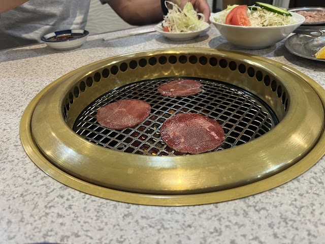
| 営業時間 | 火・水・木・金・土・日 17:00〜22:00 |
|---|---|
| 定休日 | 月曜 |
| 住所 | 愛知県豊田市朝日ケ丘１丁目１７−５ |
| 予約 | 可 — ☎ 0565-33-3535 ／ 公式サイト |
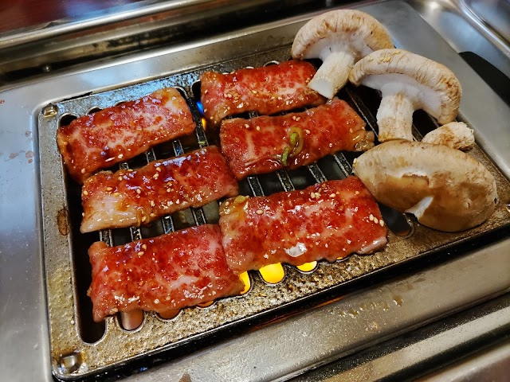
| 営業時間 | 月・火・金・土・日 17:00〜22:00 |
|---|---|
| 定休日 | 水・木曜 |
| 住所 | 愛知県豊田市月見町２丁目9−５ |
| 予約 | 可 — ☎ 0565-32-5076 |
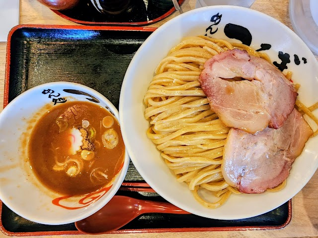
| 営業時間 | 月・火・水・木・金・土・日 11:00〜23:00 |
|---|---|
| 定休日 | なし(要最終確認) |
| 住所 | 愛知県豊田市大林町１０丁目２４−１ |
| 予約 | 要確認 — ☎ 090-9266-5189 ／ 公式サイト |
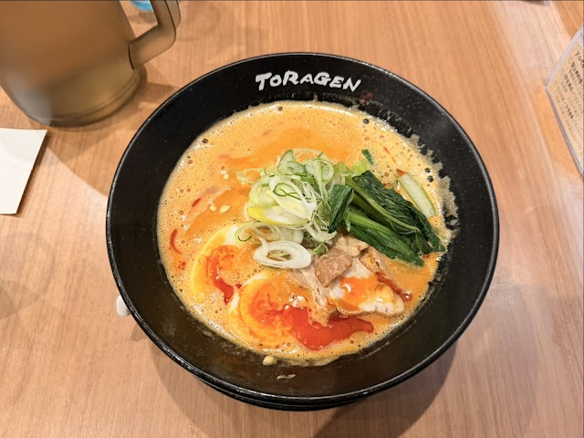
| 営業時間 | 火・水・木・金 11:30〜14:00, 18:00〜22:00 ／ 土・日 11:30〜14:30, 18:00〜22:00 |
|---|---|
| 定休日 | 月曜 |
| 住所 | 愛知県豊田市山之手５丁目９１ |
| 予約 | 要確認 — ☎ 0565-41-5669 ／ 公式サイト |
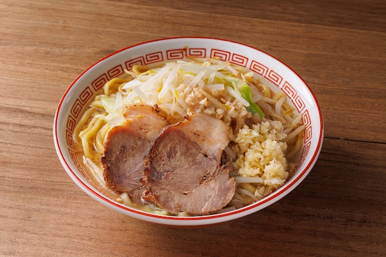
| 営業時間 | 月・火・水・木・金 11:00〜14:00, 17:30〜21:00 ／ 土・日 11:00〜14:30, 17:30〜21:00 |
|---|---|
| 定休日 | なし(要最終確認) |
| 住所 | 愛知県豊田市西岡町保ケ山５６−１ |
| 予約 | 要確認 — ☎ 050-8882-7366 ／ 公式サイト |
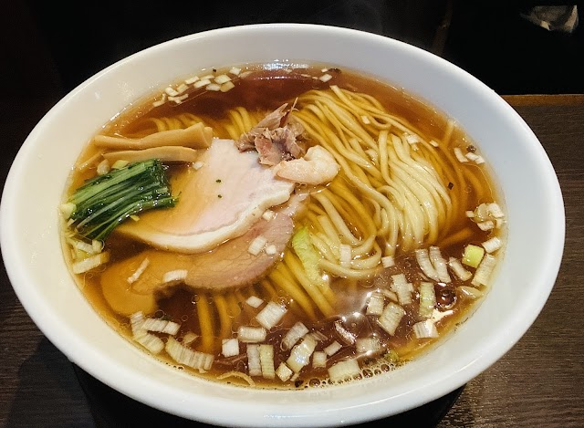
| 営業時間 | 火・水・木・金・土 11:00〜14:00, 18:00〜20:30 ／ 日 11:00〜14:00, 18:00〜20:00 |
|---|---|
| 定休日 | 月曜 |
| 住所 | 愛知県豊田市松ケ枝町２丁目２１−１ |
| 予約 | 要確認 — ☎ 0565-42-2567 ／ 公式サイト |
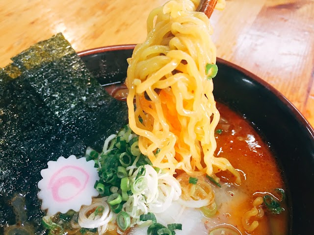
| 営業時間 | 月・火・水・木・金・土・日 11:30〜14:00, 18:00〜23:00 |
|---|---|
| 定休日 | なし(要最終確認) |
| 住所 | 愛知県豊田市東梅坪町２丁目１−２３ |
| 予約 | 要確認 — ☎ 0565-33-5633 ／ 公式サイト |
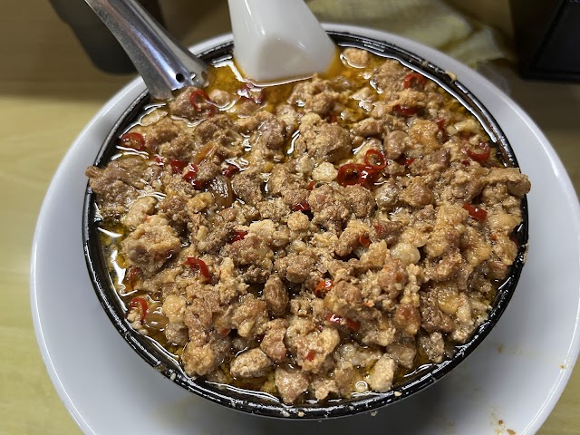
| 営業時間 | 月・水・木・日 17:00〜0:30 ／ 金・土 17:00〜2:00 |
|---|---|
| 定休日 | 火曜 |
| 住所 | 愛知県豊田市清水町１丁目２９−３ 豊福第一 |
| 予約 | 可 — ☎ 0565-24-8803 |
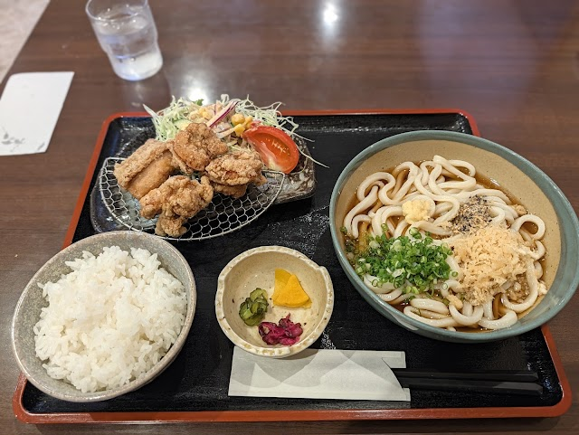
| 営業時間 | 月・水・木・金・土・日 11:00〜14:00, 17:00〜20:00 |
|---|---|
| 定休日 | 火曜 |
| 住所 | 愛知県豊田市丸山町２丁目７３ |
| 予約 | 可 — ☎ 0565-28-2076 ／ 公式サイト |
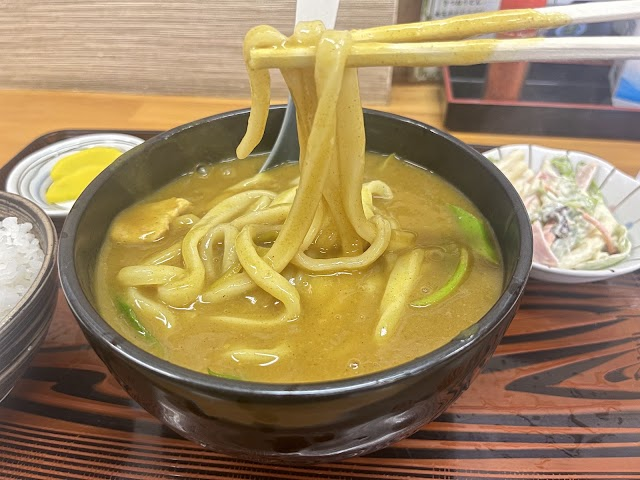
| 営業時間 | 月・火・水・木・金 11:00〜13:30 ／ 土・日 11:00〜13:30, 17:00〜18:30 |
|---|---|
| 定休日 | なし(要最終確認) |
| 住所 | 愛知県豊田市日之出町１丁目１２−１ |
| 予約 | 要確認 — ☎ 0565-32-4915 |
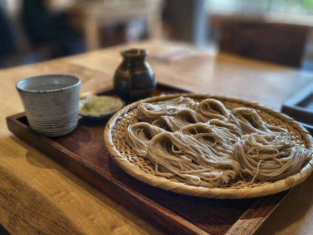
| 営業時間 | 火・水・木・金 11:00〜15:00 ／ 土・日 11:00〜15:00, 17:30〜20:30 |
|---|---|
| 定休日 | 月曜 |
| 住所 | 愛知県豊田市竹生町４丁目５８−５８ 手打ち蕎麦くくり |
| 予約 | 可 — ☎ 0565-77-7037 ／ 公式サイト |
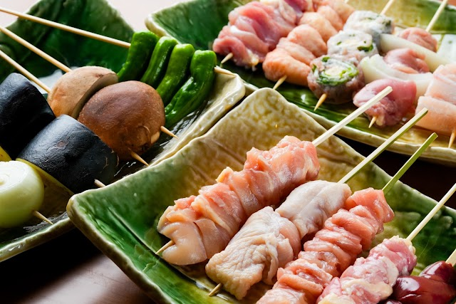
| 営業時間 | 月・火・水・木 18:00〜23:00 ／ 金 18:00〜0:00 ／ 土 17:00〜0:00 |
|---|---|
| 定休日 | 日曜 |
| 住所 | 愛知県豊田市西町５丁目３４ |
| 予約 | 可 — ☎ 0565-42-7727 ／ 公式サイト |
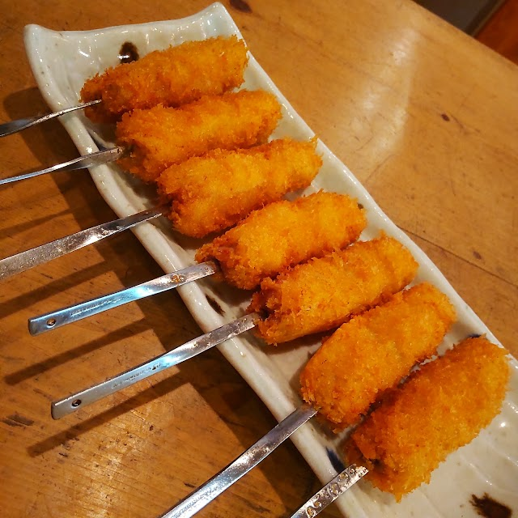
| 営業時間 | 月・火・水・木・金・土 17:00〜0:00 |
|---|---|
| 定休日 | 日曜 |
| 住所 | 愛知県豊田市昭和町４丁目４６ |
| 予約 | 可 — ☎ 0565-32-0566 ／ 公式サイト |
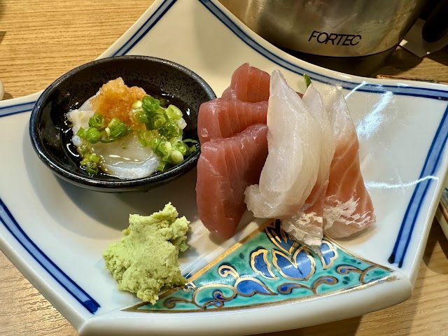
| 営業時間 | 月・水・木・金・土・日 17:00〜0:00 |
|---|---|
| 定休日 | 火曜 |
| 住所 | 愛知県豊田市桜町１丁目８５ |
| 予約 | 可 — ☎ 0565-63-5233 ／ 公式サイト |
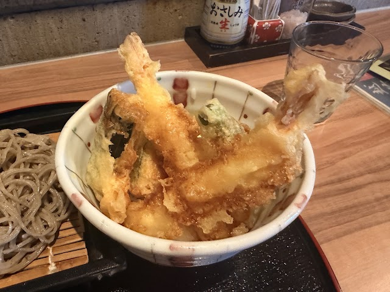
| 営業時間 | 月・火・木・金・土 11:30〜14:30, 17:00〜23:00 ／ 水 11:30〜14:30 |
|---|---|
| 定休日 | 日曜 |
| 住所 | 愛知県豊田市桜町１丁目６３ シングルプレイス 1F |
| 予約 | 可 — ☎ 050-5488-0779 ／ 公式サイト |
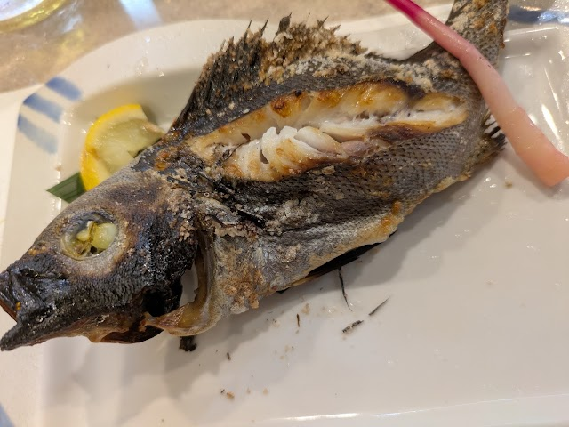
| 営業時間 | 月・水・木 15:00〜23:00 ／ 金・土 14:00〜23:00 ／ 日 14:00〜22:00 |
|---|---|
| 定休日 | 火曜 |
| 住所 | 愛知県豊田市若宮町１丁目２８−１ 1F |
| 予約 | 可 — ☎ 0565-33-3132 |
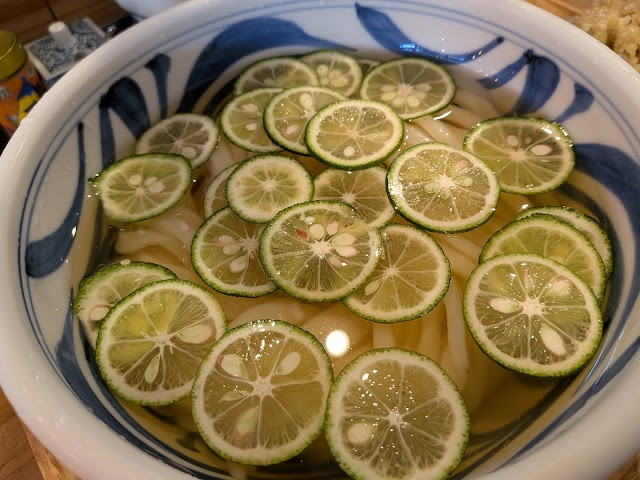
| 営業時間 | 火・水・木・金・土・日 11:30〜14:00 |
|---|---|
| 定休日 | 月曜 |
| 住所 | 愛知県豊田市西町６丁目７−４ |
| 予約 | 要確認 — ☎ 0565-32-3489 ／ 公式サイト |
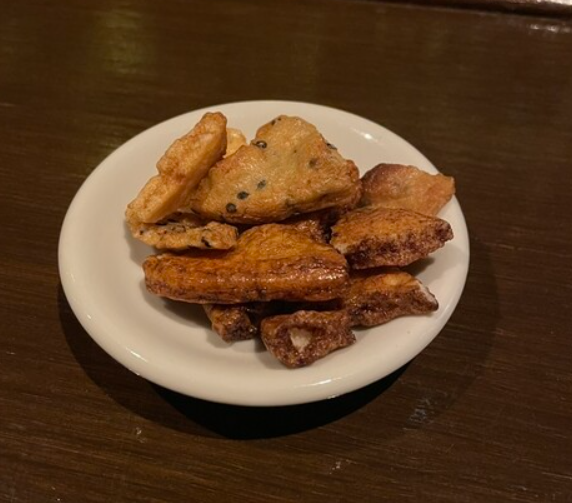
| 営業時間 | 月・火・水・日 18:00〜0:00 ／ 金・土 18:00〜1:00 |
|---|---|
| 定休日 | 木曜 |
| 住所 | 愛知県豊田市竹生町４丁目１０ |
| 予約 | 可 — ☎ 0565-34-5959 ／ 公式サイト |
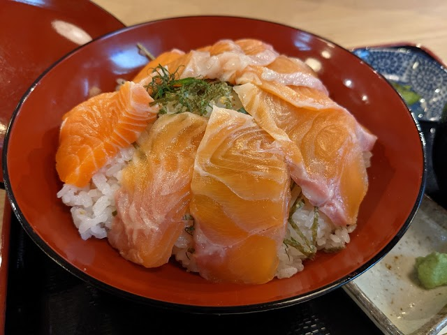
| 営業時間 | 火・水・木・金・土 17:00〜23:00 ／ 日 17:00〜21:00 |
|---|---|
| 定休日 | 月曜 |
| 住所 | 愛知県豊田市御幸本町３丁目８４ パレス第２みゆき 1階 |
| 予約 | 可 — ☎ 0565-27-1681 ／ 公式サイト |
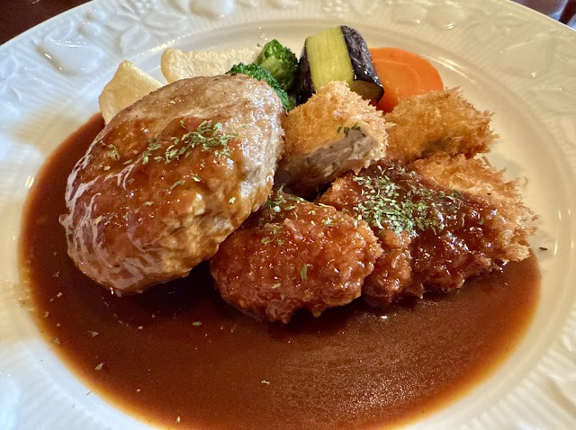
| 営業時間 | 月・木・金 11:30〜14:00, 18:00〜20:00 ／ 火 11:30〜14:00 ／ 土・日 11:30〜14:00, 17:30〜20:00 |
|---|---|
| 定休日 | 水曜 |
| 住所 | 愛知県豊田市大林町１２丁目5−１４ |
| 予約 | 可 — ☎ 0565-27-8568 |
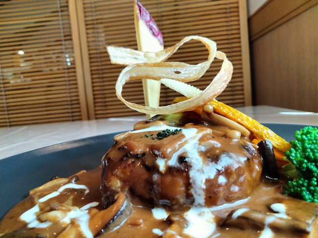
| 営業時間 | 火・水・木・金・土・日 11:00〜15:00, 17:30〜22:00 |
|---|---|
| 定休日 | 月曜 |
| 住所 | 愛知県豊田市美里５丁目１３−１ |
| 予約 | 可 — ☎ 0565-87-1360 ／ 公式サイト |
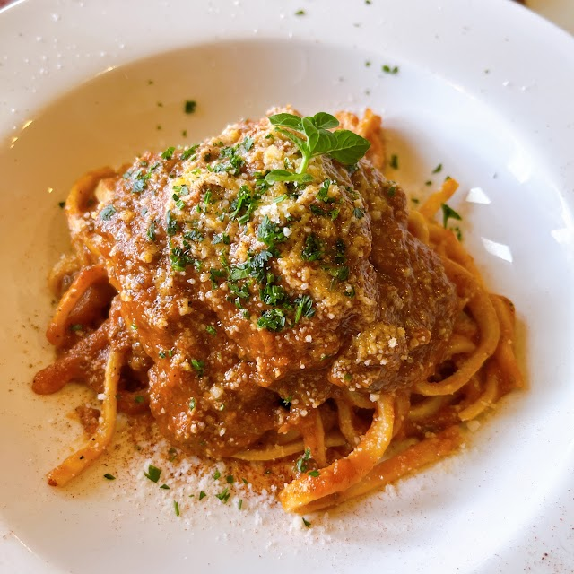
| 営業時間 | 火・水・木・金・土 11:30〜14:00, 18:00〜22:00 ／ 日 11:30〜15:00 |
|---|---|
| 定休日 | 月曜 |
| 住所 | 愛知県豊田市平山町５丁目２ |
| 予約 | 可 — ☎ 0565-41-7347 ／ 公式サイト |
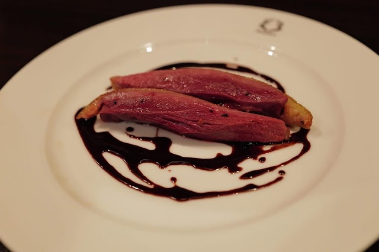
| 営業時間 | 水・木・金・土・日 11:30〜14:00, 18:00〜22:00 |
|---|---|
| 定休日 | 月・火曜 |
| 住所 | 愛知県豊田市東山町１丁目１０−１２ |
| 予約 | 可 — ☎ 0565-80-3377 ／ 公式サイト |
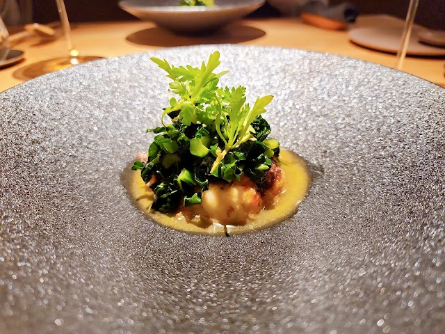
| 営業時間 | 月・水・木・金・土・日 11:30〜15:30, 18:00〜22:30 |
|---|---|
| 定休日 | 火曜 |
| 住所 | 愛知県豊田市美山町５丁目１４２−１ |
| 予約 | 可 — ☎ 0565-47-9955 ／ 公式サイト |
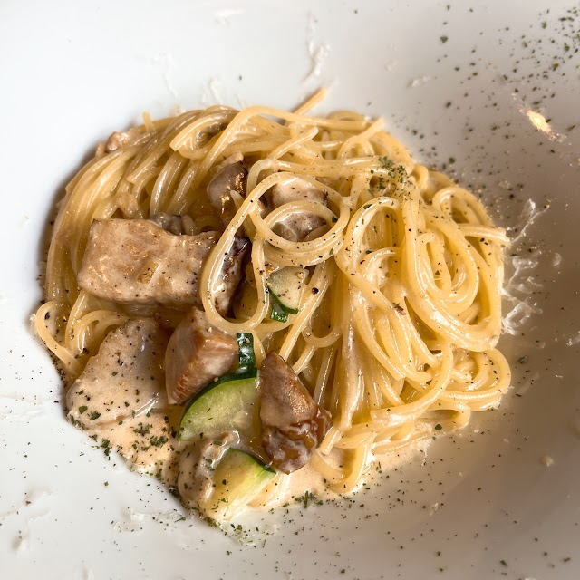
| 営業時間 | 火・水・木・金 17:00〜23:00 ／ 土・日 11:30〜14:30, 17:00〜23:00 |
|---|---|
| 定休日 | 月曜 |
| 住所 | 愛知県豊田市西町５丁目２４ |
| 予約 | 可 — ☎ 0565-63-5775 ／ 公式サイト |
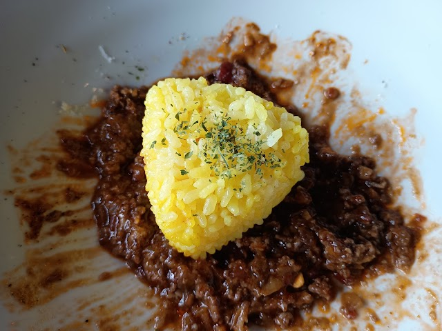
| 営業時間 | 月・火・木・金・土・日 11:00〜14:00, 18:00〜20:30 |
|---|---|
| 定休日 | 水曜 |
| 住所 | 愛知県豊田市広久手町７丁目１４ |
| 予約 | 要確認 — ☎ 0565-39-2681 ／ 公式サイト |
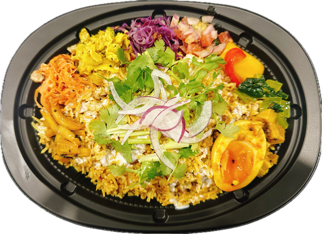
| 営業時間 | 火・水・木・日 11:30〜14:30 ／ 金・土 11:30〜14:30, 17:00〜21:00 |
|---|---|
| 定休日 | 月曜 |
| 住所 | 愛知県豊田市宮上町８丁目９６−２ コーポ水野 |
| 予約 | 要確認 — ☎ 0565-34-2587 ／ 公式サイト |
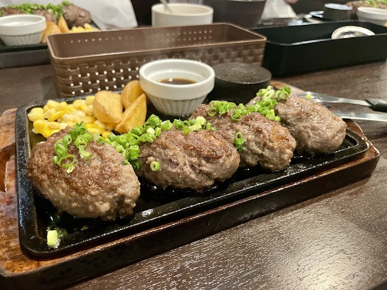
| 営業時間 | 月・水・木・金 11:00〜15:00, 17:00〜22:30 ／ 土・日 11:00〜22:30 |
|---|---|
| 定休日 | 火曜 |
| 住所 | 愛知県豊田市若林西町茶屋間１−３ |
| 予約 | 要確認 — ☎ 0565-85-7955 ／ 公式サイト |
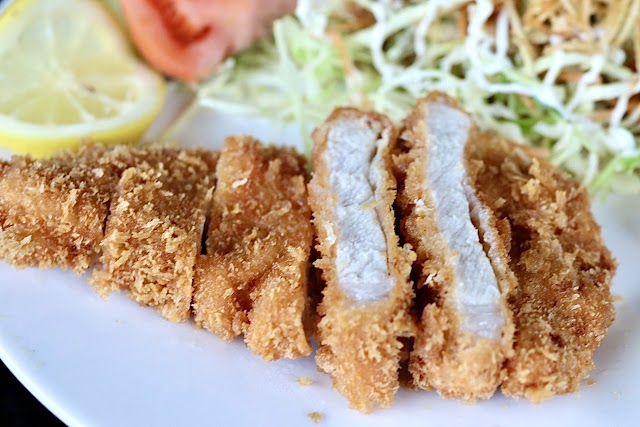
| 営業時間 | 火・水・木・金・土・日 5:00〜16:00 |
|---|---|
| 定休日 | 月曜 |
| 住所 | 愛知県豊田市四郷町天道２３−１ 鈴彦ハイツ |
| 予約 | 要確認 — ☎ 0565-45-2390 |
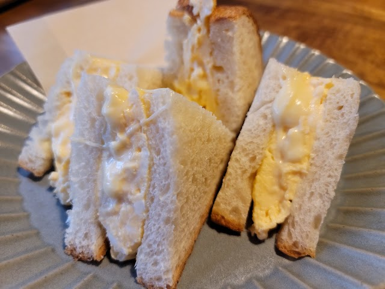
| 営業時間 | 火・水・木・金・土 9:00〜19:00 |
|---|---|
| 定休日 | 月・日曜 |
| 住所 | 愛知県豊田市神田町２丁目４−３ |
| 予約 | 要確認 — ☎ 0565-35-0212 ／ 公式サイト |
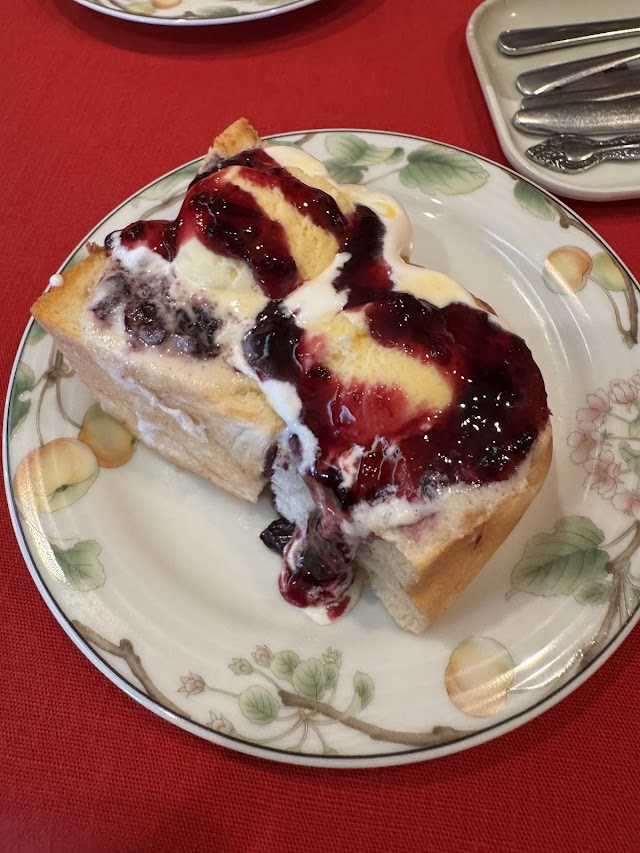
| 営業時間 | 月・火・木・金・土・日 9:00〜18:00 |
|---|---|
| 定休日 | 水曜 |
| 住所 | 愛知県豊田市挙母町４丁目１０−２ |
| 予約 | 要確認 — ☎ 0565-31-2339 ／ 公式サイト |
| 営業時間 | 月・火・水・木・金 7:30〜21:00 ／ 土 8:00〜21:00 ／ 日 8:00〜11:30 |
|---|---|
| 定休日 | なし(要最終確認) |
| 住所 | 愛知県豊田市美里２丁目１９−８ |
| 予約 | 可 — ☎ 0565-42-3439 ／ 公式サイト |
| 営業時間 | 月・水・木・金・土・日 8:00〜16:00 |
|---|---|
| 定休日 | 火曜 |
| 住所 | 愛知県豊田市丸山町３丁目４７−１ |
| 予約 | 可 — ☎ 0565-41-6008 ／ 公式サイト |
| 営業時間 | 月・水・木・金・土 8:00〜17:00 |
|---|---|
| 定休日 | 火・日曜 |
| 住所 | 愛知県豊田市栄町５丁目２−１ 三宅ビル 1F |
| 予約 | 要確認 — ☎ 0565-85-0500 ／ 公式サイト |
| 営業時間 | 月・木・金・土・日 9:00〜18:00 |
|---|---|
| 定休日 | 火・水曜 |
| 住所 | 愛知県豊田市広久手町５丁目２７−４ |
| 予約 | 要確認 — ☎ 0565-77-3525 ／ 公式サイト |
| 営業時間 | 月・水・木・金・土・日 8:00〜18:00 |
|---|---|
| 定休日 | 火曜 |
| 住所 | 愛知県豊田市保見町塚原１５ |
| 予約 | 要確認 — ☎ 0565-48-8036 ／ 公式サイト |
| 営業時間 | 月・水・木・金・土・日 8:30〜18:00 |
|---|---|
| 定休日 | 火曜 |
| 住所 | 愛知県豊田市足助町田町２２ |
| 予約 | 要確認 — ☎ 0565-62-0014 ／ 公式サイト |
本ガイドは個人利用目的で作成。掲載情報は2026年9月時点の調査に基づく。写真出典: Google Maps投稿写真(©各投稿者/Google)。